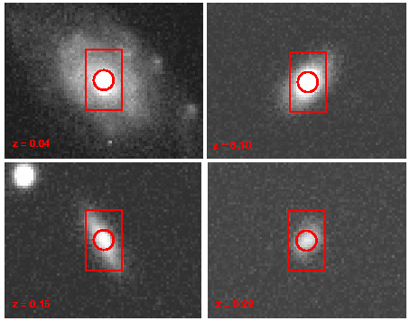
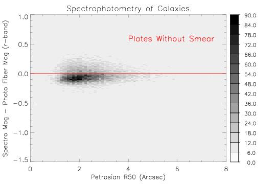
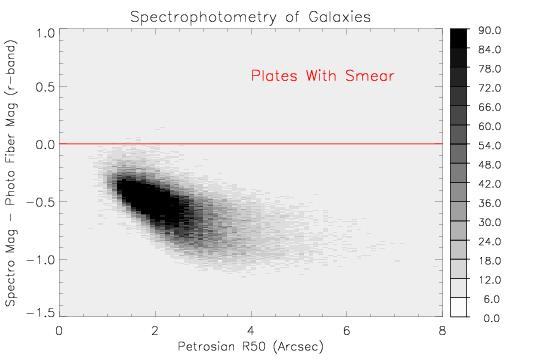
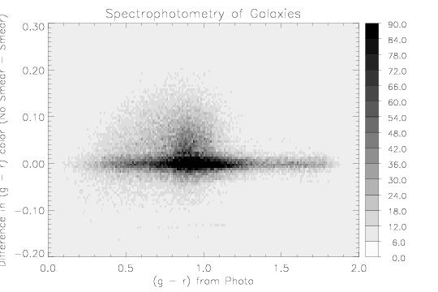

The smear observations are short (4 minute) spectroscopic observations made while the telescope dithers such that the fibers map out a 5.5 x 9 arcsecond box on the sky, with the long axis perpendicular to the horizon. They are obtained once per plate plugging.
|  |
| SDSS images of L* galaxies at various redshifts with the 3" diameter fiber aperture and the 5.5" x 9" smear aperture overlayed. Note that the orientation of the long axis of the smear will be random relative to the galaxy major axis in practice. |
The smear observations are used in fluxing the spectra to correct for light losses from the 3" fiber aperture. Light loss can be caused by bad guiding, poor seeing, or bad fiber placement. All of these problems are made even more onerous by atmospheric refraction, which causes light from the science aperture to be displaced on the sky as a function of wavelength. This effect is particularly significant for the SDSS spectra because of their broad wavelength coverage (3800 - 9200 Å). At an airmass of 1.5 (the worst under which DR1 spectroscopy was obtained) the light at the ends of the spectrum is dispersed by nearly 1/2 of the fiber aperture, causing potential spectrophotometric errors.
The Spectro2d pipeline utilizes the smears to help combine multiple exposures that have been extracted and wavelength calibrated. Since the individual frames may have been taken under very different conditions their observed fluxes may not agree well -- a problem that makes cosmic ray rejection difficult. To remove the exposure-to-exposure differences, the Spectro2d pipeline fits a third order polynomial to the ratio of the smear exposure and each science exposure for each fiber individually. These polynomials are then used to correct the science exposures such that their low order spectral energy distributions (SEDs) match that of the smear. For a given spectrum, the net result is that the high frequency spectral features come from the science exposures in the 3" aperture, but the low frequency spectral shape and the total flux come from the 5.5" x 9" smear exposure. The consequences of this for galaxies and stars are quite different.
When smears are not available or of insufficient quality Spectro2d uses the science observation with the highest S/N as a proxy for the smear observation and proceeds in an identical manner. Thus, spectra can be reduced with or without smears. Of the 290 spectroscopic plates in the DR1 data set, 226 were calibrated using smear observations.
The use of smear exposures to calibrate stellar spectra helps to recover lost light and thereby improves spectrophotometry. However, the situation is very different for galaxies, because they are extended sources. The fraction of galaxy light contained within the 3" fiber aperture is typically about 1/3 and rarely exceeds 1/2. Thus, poor seeing and guiding cause the fiber to see slightly different parts of the galaxy rather than simply causing light loss. Atmospheric dispersion also acts differently since light is dispersed into the fiber aperture from adjacent regions of the galaxy as well as out of it. Moreover, there is a lot of variation from galaxy to galaxy, due to the range of physical sizes, redshifts, surface brightness profiles, and radial color gradients observed.
The most obvious effect of the smear calibration on galaxies, is that the total flux of the spectrum increases since more light is recovered by the larger smear aperture. This is demonstrated below, by comparing magnitudes synthesized from the spectra with fiber magnitudes from the imaging data. As expected, the increase in flux depends on the galaxy's size.
| 
|
| 
|
| Comparison of magnitudes synthesized from the spectra
with fiber magnitudes from the imaging for plates with (bottom) and without
(top) smear. The x-axis is the petrosian half light radius in the r-band. The greyscale represents the number of galaxies in each bin. |
The impact of the smear calibration on the colors of galaxy spectra is even more important to understand since it affects the SEDs of galaxies and their emission line ratios. One concern is that galaxies are known to have radial color gradients. Unfortunately, the gradients are expected to be pronounced in the most common galaxies in the SDSS sample, namely spiral galaxies near L*, which harbor both a significant bulge and disk component. Strong color gradients are problematic, because the galaxy SEDs in the science and smear apertures may be not be similar. We have tested this by reducing the DR1 spectra with and without smear. The results are shown below.
| 
|
| Difference between the (g-r) colors of galaxies with
and without the smear calibration applied. The grey scale represents the
number of galaxies in each bin. |
Many galaxies are virtually unaffected by smear, especially red galaxies. However it is clear that smear can change the colors of some galaxy spectra substantially. This should be considered when undertaking scientific programs requiring high spectrophotometric precision.
In future data releases the smear calibrations will not be used on galaxies.